Simon McCabe
OSCP · OSWP · PWPP · PWPA · PAPA · EnCE · Linux+ · LPIC-1 · Network+ · Security+ · Pentest+ · eJPT · eWPT · BSc · PGCert

OSCP · OSWP · PWPP · PWPA · PAPA · EnCE · Linux+ · LPIC-1 · Network+ · Security+ · Pentest+ · eJPT · eWPT · BSc · PGCert
...Year of The Rabbit Writeup...
I started with nikto, nmap and dirb. Nmap found ftp/ssh/http and dirb found an /assets folder. I figured I had enough to begin, so I got going.
There were two files in the assets folder. A link to a rickroll video, and a style.css file. I looked at the style.css and found it to contain a link to a php file, hinting that it contained a flag.
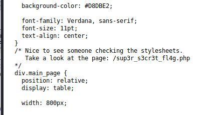
When browsing to the super secret flag, it suggested that javascript should be turned off:
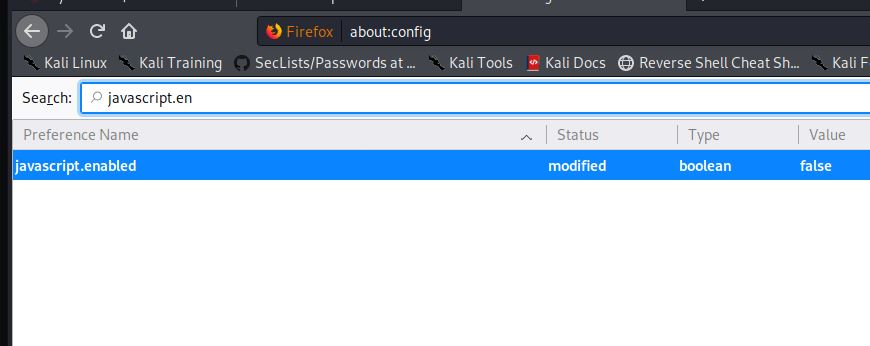
After turning off JS, I refreshed the page:
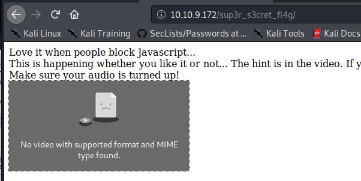
I did as it asked and kept my volume up. Approx 1 min into the video, it said I was looking in the wrong place and that I should use *burp sound*
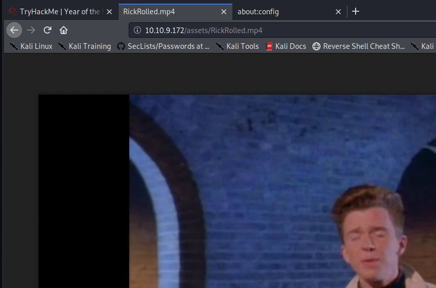
I figured up burpsuite and browsed back to the previous directory. I then browsed forward again (with JS back on) and noticed there was a callout to a secret directory that had not been displayed anywhere so far.
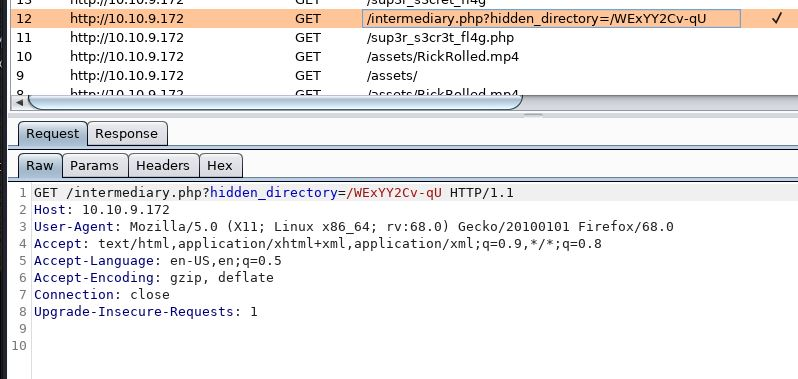
That was all the enumeration needed in order to start making some serious progress.
I browsed to the hidden directory and saw a PNG file titled "Hot_Babe.png". The file didn't have anything written onto the image itself...
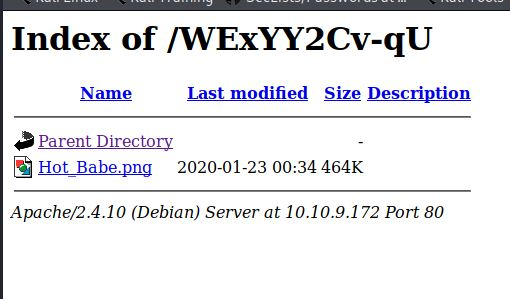
However, running "strings" on the file produced some very interesting results:
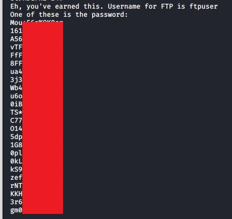
The ftp user was "ftpuser" (do'h, should have guessed). But the password was one of the ones listed in the file. I created a file containing all of the passwords and ran it through hydra:
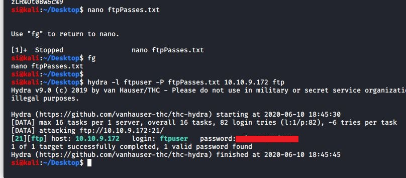
Next up, I looked into FTP, listed the files and pulled them to my local attacker machine:
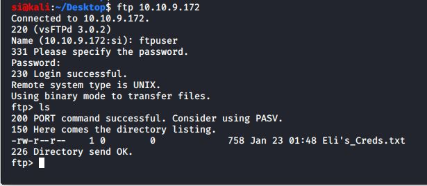
This led to the following encoded text file:
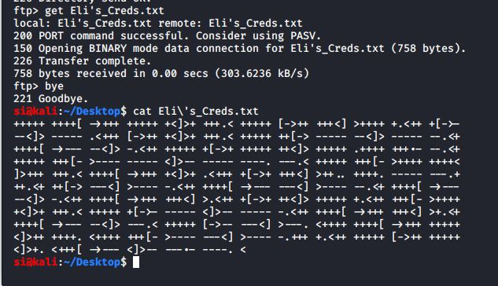
This was brainf*ck encoded JS (that's legitimately what it's called. I know...ghastly!)
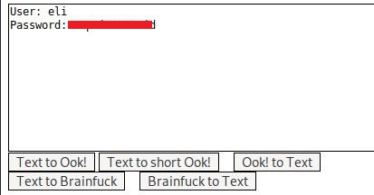
I used the above creds to log in via SSH.
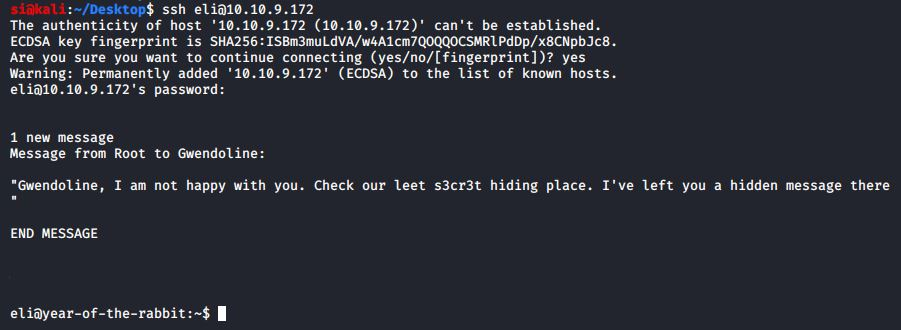
As above, I was logged in as eli and the login message suggested that there was a "s3cr3t" hiding place. I was unable to read the user.txt file in gwendoline's home directory, so I used the locate command to quickly find where it was on the file system:
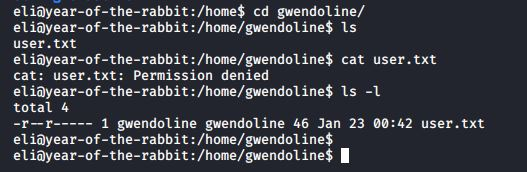
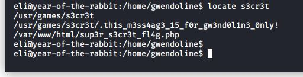
Reading the secret message displayed another password. This was the password for gwendoline.
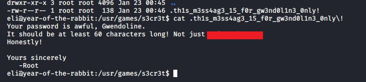
Now, logged in as gwendoline, I looked at what she could run without a password:
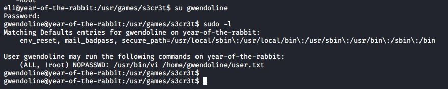
The (ALL, !root) NOPASSWD: /usr/bin/vi looked very suspect. I decided to focus on this.
I checked what version of sudo was running and it was 1.8.10, which meant it was vulnerable to CVE-2019-14287
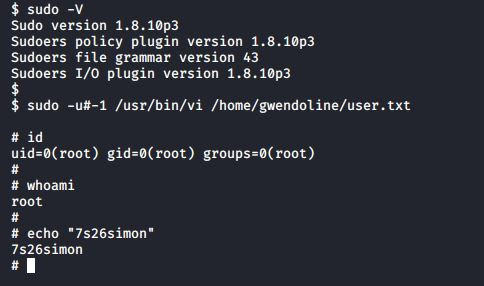
I ran the command as -u#-1 (aka root) and managed to get a root shell, using:
:set shell=/bin/sh
:shell
once inside vi. I was now root and could read the flag in /root. Excellent machine! Really got me thinking.